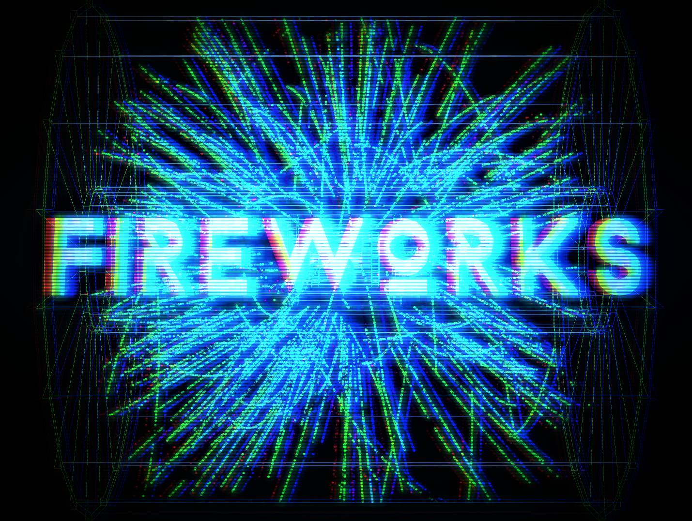

click anywhere to change dimension


The accelerator complex at CERN is a succession of machines that accelerate particles to increasingly higher energies. Each machine boosts the energy of a beam of particles, before injecting the beam into the next machine in the sequence. In the Large Hadron Collider (LHC) – the last element in this chain – particle beams are accelerated up to the record energy of 6.5 TeV per beam. Most of the other accelerators in the chain have their own experimental halls where beams are used for experiments at lower energies.
The proton source is a simple bottle of hydrogen gas. An electric field is used to strip hydrogen atoms of their electrons to yield protons. Linac 2, the first accelerator in the chain, accelerates the protons to the energy of 50 MeV. The beam is then injected into the Proton Synchrotron Booster (PSB), which accelerates the protons to 1.4 GeV, followed by the Proton Synchrotron (PS), which pushes the beam to 25 GeV. Protons are then sent to the Super Proton Synchrotron (SPS) where they are accelerated to 450 GeV.
The protons are finally transferred to the two beam pipes of the LHC. The beam in one pipe circulates clockwise while the beam in the other pipe circulates anticlockwise. It takes 4 minutes and 20 seconds to fill each LHC ring, and 20 minutes for the protons to reach their maximum energy of 6.5 TeV. Beams circulate for many hours inside the LHC beam pipes under normal operating conditions. The two beams are brought into collision inside four detectors – ALICE, ATLAS, CMS and LHCb – where the total energy at the collision point is equal to 13 TeV.
The accelerator complex includes the Antiproton Decelerator and the Online Isotope Mass Separator (ISOLDE) facility, and the Compact Linear Collider test area, as well as the neutron time-of-flight facility (nTOF). It also previously fed the CERN Neutrinos to Gran Sasso (CNGS) project.
Protons are not the only particles accelerated in the LHC. Lead ions for the LHC start from a source of vaporised lead and enter Linac 3 before being collected and accelerated in the Low Energy Ion Ring (LEIR). They then follow the same route to maximum energy as the protons.